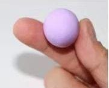

Flor
Vamos a empezar
Paso 1 Hacer una bolita con la arcilla.

Paso 2 Separarla en 9 bolitas.
Paso 3 hacerlas en forma de gotas
Paso 4 Juntarlas para que se haga un circulo entre ellas
Paso 5 ya que estén juntas hacer una bolita amarilla y ponerla en el centro de la flor
Juntar la zanahoria con los dos palitos verdes puestos en la parte de arriba